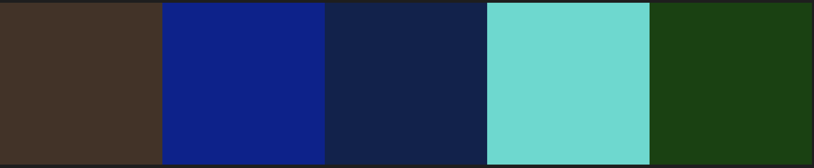

Redesign af hjemmeside
Superspændende opgave! Det var ikke alene interessant, at redesigne en hjemmeside for en af mine venner, for jeg fandt også at de projekter de andre grupper lavede var utroligt lærerige.
Gruppe
Jeg fik 'tildelt' to unge mænd, der straks var med på at redesigne 'bynisch'. De fik skam rum og mulighed for at komme med andre ideer, men de syntes - som jeg selv - at vi jo nok ikke kunne lave det andet end bedre end det nuværende.
Den ene - Oliver - ville gerne være inde over kodningen og den anden ville især gerne lave interviewet.
De var måske ikke supertilstedeværende, men fik lavet et rigtigt fint interviewe og nogle fantastisk flotte product shots, så alt i alt et fint samarbejde. (Med mig i klassisk rolle som bossen.)
Vi besluttede at fastholde originalens farver:

Bynisch
Bynisch har eksisteret godt et års tid. Indehaveren Nina Schewitch lavede til sig selv olier og cremer, som hun i slutingen af 2017 opdagede var så gode, at folk faktisk ville betale for dem.
Herefter satte hun sin produktion i vejret og har solgt pænt efter "word by mouth"-metoden.
Hun fik også lavet sig en hjemmeside, og rådspurgte sig i sommer mig om, hvorfor der ikke var noget salg på hendes hjemmeside. "Tja", det kræver ikke nogen stor markedsførings eksamen at gennemskue, at den oprindelige hjemmeside nok nærmere skræmmer folk væk end modsat - især når det er produkter vi skal have på vores hud og mund.
Derfor var redesign af hendes hjemmeside min første tanke, da opgaven blev formuleret. Og som det nok ses alene FØR-EFTER på forsiden, var det et kvantespring for hende.
Og senere?
Jeg har sat det nye design op i en skabelon fra Ninas nuværende udbyder. Det begrænser slevsagt nogle features, men altvernativ, ville jeg have været administrator på hende site - og det ville have været tidskrævende. (Meget!)